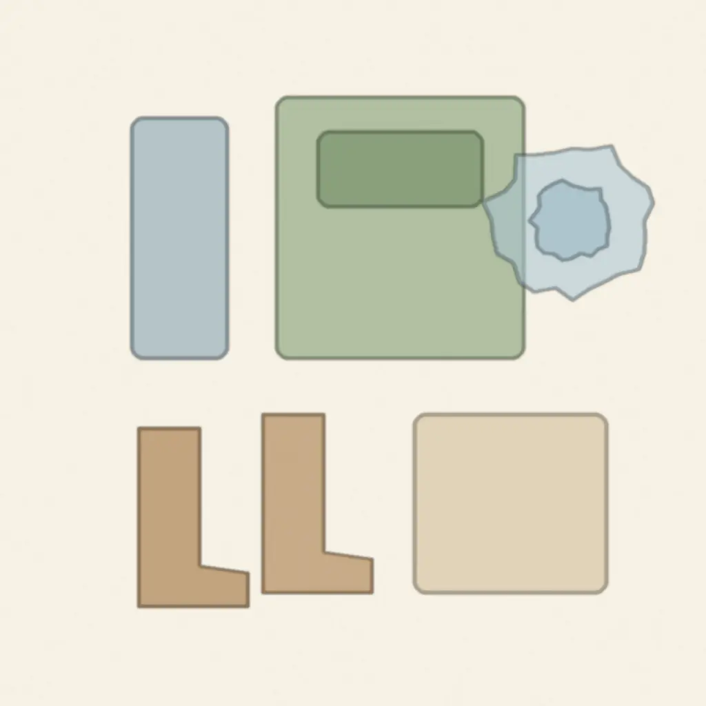

時刻の帯
晴れの日と、雨の日。
小屋に集まってから、お迎えまで。雨の日に変わることを、時刻ごとに並べました。
-
小屋に集合
森の入口の小屋で身支度をして、朝の会。その日に行く場所を、子どもと決めます。
雨の日雨合羽と長靴に着替えて出かけます。
-
森へ歩く

小屋から森の広場まで、みんなで歩きます。森の中では、いつも大人2人以上でいます。
雨の日雷・大雨・強風の注意報や警報の日は森に入らず、小屋とその周りで過ごします。
-
広場であそぶ

木登り、どろあそび、虫さがし。森の中で、思い思いにあそびます。

雨の日広場にタープを張って、その下に集まる場所をつくります。
-
お弁当

木の下に敷物を広げて、みんなで食べます。給食はありません。
雨の日12:00 からお迎えまでは、晴れの日と同じ流れです。
-
帰り道
歩いて小屋に戻り、着替えをします。
-
お迎え
小屋で、保護者の方にお渡しします。
通う日のこと
毎朝、リュックに入れてくるもの。
| 持ち物 |
|
|---|---|
| 服装 | 汚れてもよい長袖・長ズボン。持ち物すべてに名前を書いてください。おもちゃやお菓子は要りません。 |
| 送り迎え | 送迎バスはありません。森の入口の小屋まで、保護者の方が送り迎えをしてください。小屋の横に車8台分の駐車場と、自転車置き場があります。 |
| ほかの費用 | 入園のとき 12,000円（年1回・税込）。ほかに毎月の集金はありません。内訳はトップの「費用」に。 |
次に読む